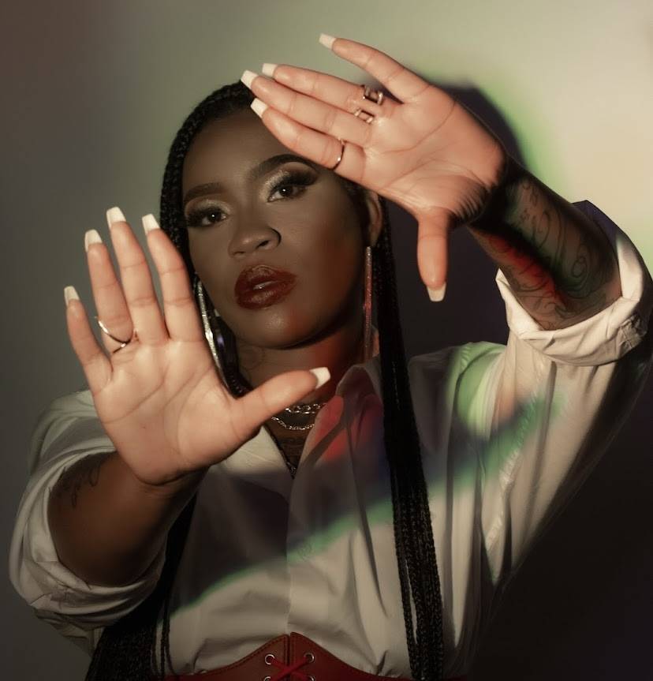
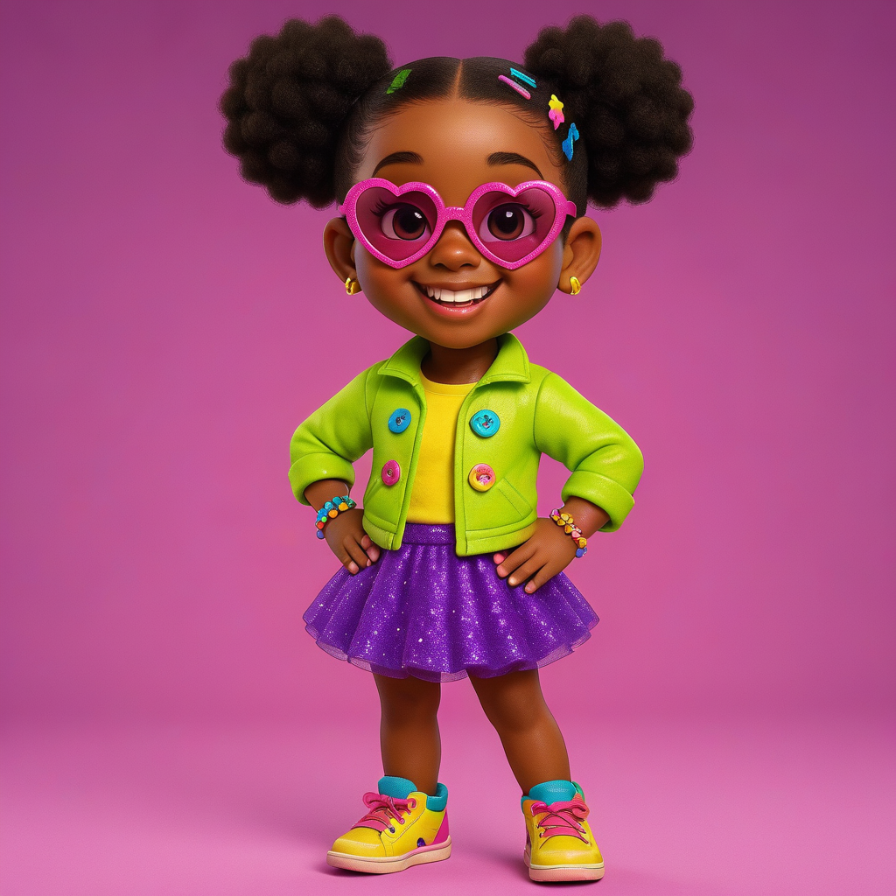
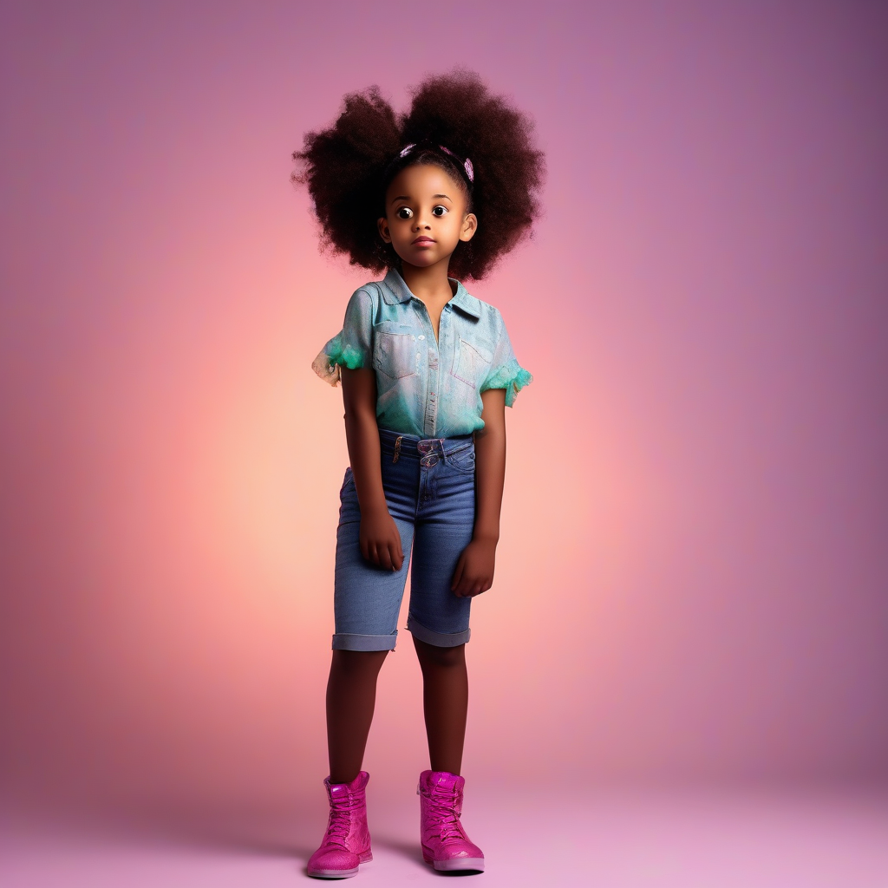
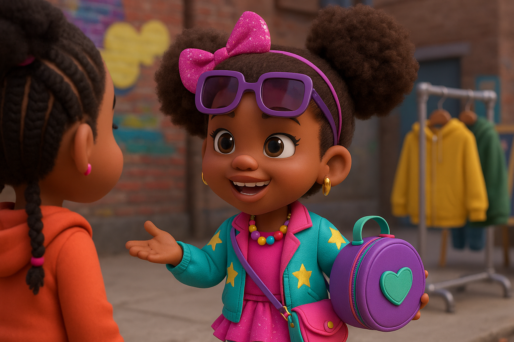
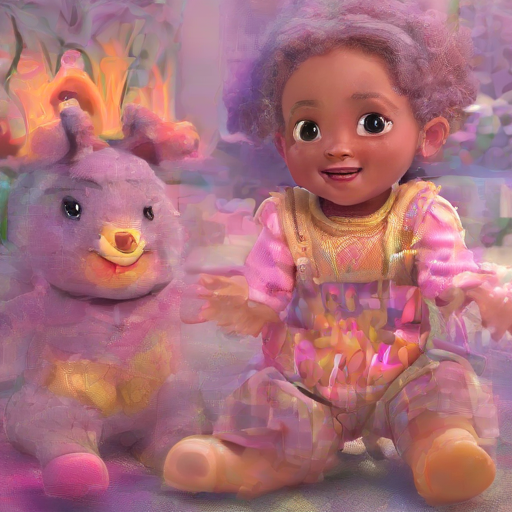

Fashion & Brand Development
Studying identity, presentation, aesthetics, and the systems behind creative markets.
Creative Research Portfolio
Exploring the relationship between visual culture, creative production, artificial intelligence, and human-centered innovation.
Ms. Maxine Melissa Oglesby
I didn't arrive here by following a traditional path.
My journey began in fashion, branding, photography, and visual storytelling before evolving into animation, artificial intelligence, and systems engineering. Each discipline expanded the way I think about creativity, identity, and problem solving, ultimately leading me toward original research.
I am a graduate of Community College of Philadelphia, earning an Associate of Applied Science in Fashion Merchandising and Marketing, and have been accepted to Thomas Jefferson University to continue my education toward my bachelor's degree.
My work has also been recognized through an honorary award from Philadelphia City Councilwoman Katherine Gilmore Richardson during Women's History Month: Women in Labor, and has been featured in publications highlighting my journey, creative work, and commitment to innovation.
The Evolution
Areas of Work
Studying identity, presentation, aesthetics, and the systems behind creative markets.
Developing an eye for composition, timing, emotion, depth, and narrative framing.
Exploring how characters, worlds, scenes, and production workflows become scalable stories.
Investigating how AI can support creative production while preserving artistic intent.
Designing structured workflows that connect creativity, governance, validation, and iteration.
Developing CCLD as a research response to identity drift in AI-generated character production.
Featured Research
KiKi AI OS is an AI-powered production operating system designed to manage the lifecycle of animated intellectual property. It is not only an image engine; it is a broader production ecosystem that connects creative intelligence, governance, production planning, validation, asset management, publishing, marketing intelligence, audience intelligence, and continuous learning.
CCLD originated from a core production problem: the image engine could train characters, but could not consistently regenerate them without identity drift. Instead of treating prompt engineering as the final answer, I began researching governed identity conditioning.
Research Evidence
A curated visual archive showing creative progression, production tests, character identity research, visual experiments, and final KiKi AI OS outputs.





Looking Ahead
My goal is to continue developing research at the intersection of creative technology, artificial intelligence, animation systems, human-AI collaboration, and computational creativity. Thomas Jefferson University represents the next environment where this work can mature academically, technically, and creatively.
Connect
Creative Research Portfolio
maxineoglesby.com